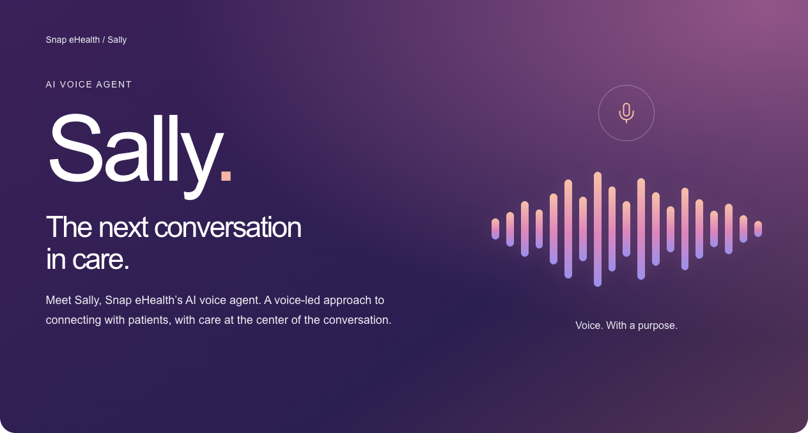

// agent orchestration
Symphony
Engineering workflows that connect a bounded task to an agent-produced change, reproducible checks, and human review.
Read the Symphony essay 7 minwhoami
Founder · Technologist · Applied AI · Agentic Solutions Architecture
cat intro.txt
I take AI products from problem to launch: setting scope with the business, building the agent platform, and proving it with evaluation before it scales. I'm CTO & Head of AI Product at Snap eHealth.
It helps reduce the guesswork of choosing a place, while clearly showing when crowd information is recent, historical, or unavailable.
Ask out loud how busy a place will be. I’m building it to answer with forecasts from my own model and place details from a small knowledge base, and to never speak a number a tool didn’t return.

Snap eHealth / Sally
AI Voice Agent
Sally
The next conversation
in care.
Meet Sally, Snap eHealth’s AI voice agent. A voice-led approach to connecting with patients, with care at the center of the conversation.
Predictive modeling, conversational AI, agent workflows, and the evaluation behind them.
Engineering workflows that connect a bounded task to an agent-produced change, reproducible checks, and human review.
Read the Symphony essay 7 minAn evaluation system for healthcare chat and summaries that makes changes in model behavior visible, reproducible, and actionable.
Read the AI Evaluation essay 7 minExplainable specialist ranking, alongside a separate predictive ML project building synthetic data and temporal validation for 30-day referral completion.
Read the Referral Intelligence essay 6 minNotes on applied AI, agentic architecture, and evaluation.
A banquet for 180 guests and a sub shop’s weekly turkey order reveal when to calculate, when to forecast, and how to combine the two.
How to evolve your models, evaluations, data, and engineering team while preserving the speed and customer focus of an early startup.
The orchestration, isolated execution, policy, and evidence that let autonomous agents deliver software safely.